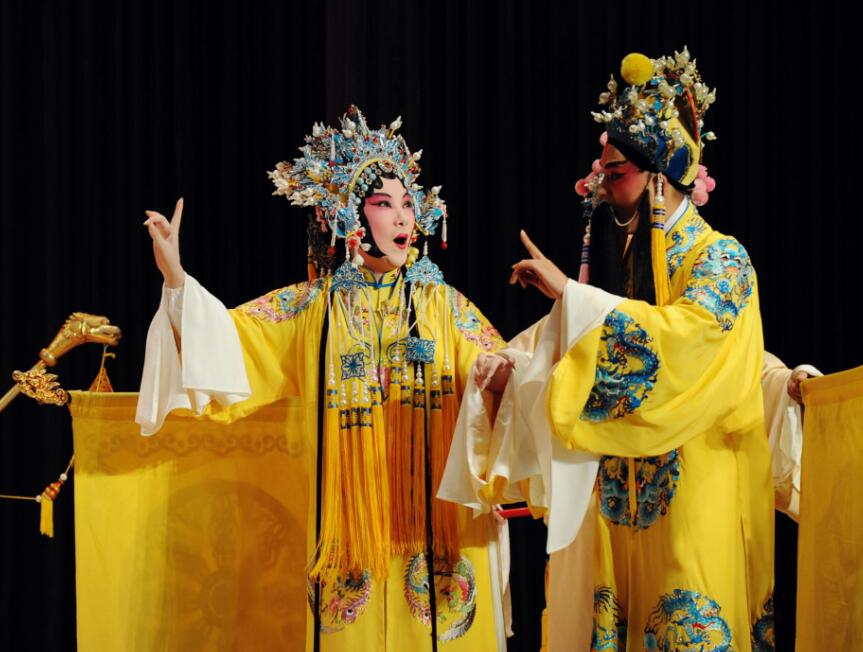

清地方戏

清代地方戏是古典戏曲的第三个阶段。它和近、现代戏曲有着共同的艺术形式。清康熙末叶，各地的地方戏蓬勃兴起，被称为花部，进入乾隆年代开始与称为雅部的昆剧争胜。至乾隆末叶，花部压倒雅部，占据了舞台统治地位，直至道光末叶。这150多年就是清代地方戏的时代。1840年1919年的戏曲称近代戏曲，内容包括同治、光绪年间形成的京剧以及20世纪初出现的一段戏曲改良运动。
清代地方戏有着强劲、凄切的主体风格，它创建了以板式变化体为主导的音乐体制和由此带来的新的剧本文学形式。另外，戏剧文本的结构形式由传奇的分出转变为分场的结构形式，从而型制不再像传奇那样拖沓繁冗、结构松散，而是有着结构严谨、适宜观众接受的特色。不过，清代地方戏也存在着不足之处，如语言芜杂、准确度不高等。
清代地方戏的剧目数量之巨，堪称历史之最。史料载：1956年全国第一次戏曲剧目统计时，统计出传统戏曲剧目共51867个，属清代地方戏的剧目、剧本有上万个。清代地方戏多为出身于农民或农村的手工业者、城市社会底层的艺人集体创作出来，所以就形成了清代地方戏贴近民众的特色，具有广泛的群众性。清代地方戏主要是根据历代演义、小说改编而成的。另外，也有根据杂剧、传奇、话本、曲艺等形式改编、移植的。清代地方戏的题材可分为历史戏、妇女戏、爱情婚姻戏、公案戏、神话戏和诙谐小戏以及无法归类的戏。其中，历史戏有《如意钩》、《清河桥》、《阳平关》等，妇女戏有《花木兰》、《樊江关》等，爱情婚姻戏有《买姻脂》、《何文秀》等，公案戏有《探阴山》、《奇冤报》等，神话戏有《画中人》、《琵琶洞》等，诙谐小戏有《老换少》、《祭头巾》等。